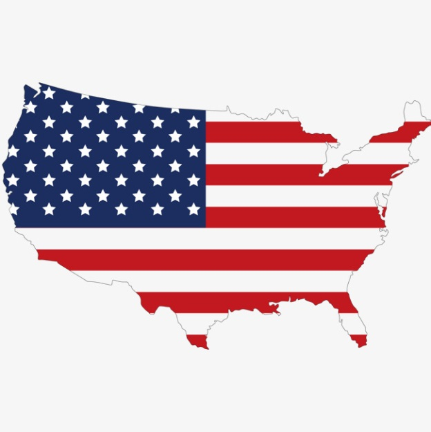
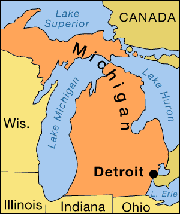

ESTADOS UNIDOS DE AMERICA
DETROIT, MICHIGAN
(Lugar natal de mi mamá)
 
Estados Unidos de América es un país soberano constituido en república federal constitucional compuesta por cincuenta estados y un distrito federal. La mayor parte del país se ubica en el centro de América del Norte, donde se encuentran sus cuarenta y ocho estados contiguos y Washington D. C., el distrito federal, entre los océanos Pacífico y Atlántico, limita con Canadá al norte y con México al sur. El estado de Alaska está en el noroeste del continente, limitando con Canadá al este y separado de Rusia al oeste por el estrecho de Bering. El estado de Hawái es un archipiélago polinesio en medio del océano Pacífico, y es el único estado estadounidense que no se encuentra en América. El país también posee varios territorios en el mar Caribe y en el Pacífico.
Viven más de 325 millones de habitantes, es el cuarto mayor en área total, el quinto mayor en área contigua y el tercero en población. Es una de las naciones del mundo étnicamente más diversas y multiculturales, producto de la inmigración a gran escala.
El país es la principal fuerza capitalista del globo, además de ser líder en la investigación científica y la innovación tecnológica desde el siglo XIX y, desde comienzos del siglo XX, el principal país industrial; con altos niveles del que goza de muchas instituciones públicas y privadas de educación superior competitiva bajo políticas de admisión abiertas.
La gastronomía de los Estados Unidos corresponde a una mezcla muy variada de otras gastronomías, esto es así debido a que es un país creado fundamentalmente de inmigrantes procedentes de diferentes países de Europa, Asia, África, y otros países. Podría denominarse como autóctona la gastronomía de los indígenas de Norteamérica y el resto es una fusión de diferentes culturas gastronómicas llevadas a diferentes extremos. Por una parte está la fast food llena de su atractivo marketing, por otra parte está la comida tradicional fundamentada en las tradiciones ganaderas de antaño, tanto de ganado vacuno como ovino y caprino. Las comidas extranjeras más famosas son la China y la de sus vecinos de México.
Podríamos llamar “Comida tradicional americana” a los platos que se preparan en las fiestas tradicionales. Como sería el pavo (tradicionalmente en el Día de Acción de Gracias), el maíz, las habas, el girasol, las patatas, los pimientos y diversas formas de pepinos que eran típicos en la dieta culinaria de los indios nativos y son hoy en día ingredientes muy celebrados en las especialidades culinarias estadounidenses regionales. También, usan técnicas de cocina e ingredientes culinarios de los inmigrantes. Aun así no está bien establecido que tipo de comida debe ser considerada estadounidense y cual no.
Los judíos del país
El primer registro de un judío viviendo en los Estados Unidos de América, es del señor Luis Carbajal, un converso conquistador español, quien pisó tierras americanas en 1570. Y el primer judío en nacer en este país fue Joaquim Gans en 1584.
Los primeros judíos en llegar eran de origen sefaradí, y se ubicaron en la zona noreste de los Estados unidos. Desde entonces la inmigración ha sido constante, y de todas partes. Buscando nuevas fronteras para desarrollarse económicamente y también escapando del antisemitismo europeo.
De una población de 1000 2000 judíos registrada en 1790, la comunidad judía creció hasta alcanzar los 15.000 judíos para el año 1840. Y llegó a 250.000 para 1880. Para la época de la primera Guerra Mundial se encontraban 2 millones de judíos en el país. Y para el año 2005 se registraba una población judía de 5.3 millones.
Los judíos pronto se organizaron, estableciendo sinagogas, creando asociaciones, especialmente para su organización y ayuda mutua.
Los judíos se expandieron por todo el territorio y pronto se integraron a la sociedad americana, y participaron en todos los ámbitos del país: comercial, político y militar. La mayoría de los judíos pertenecen a la organización judía reformista, lo siguen numéricamente los conservadores y por último se encuentran los ortodoxos. Sin embargo, aproximadamente un 25 % de los judíos no están registrados en ninguna organización religiosa.
Los primeros judíos en Detroit (1762-1783)
El primer judío registrado en la ciudad de Detroit fue el señor Chapman Abraham, que vino de Montreal en el año 1762 y murió en 1783.
El primer barrio judío en Detroit fue creado en 1880 y lo conformaban judíos provenientes de Alemania y de Europa Central.
Pronto se expandieron para otras áreas del estado de Michigan y se formaron varias congregaciones, de distintas tendencias.
Para la década de los 90, la población de Michigan era de 9.478.000 siendo los judíos registrados; 107.000 de los cuales 96.000 estaban ubicados en la zona de Detroit. No hay censos registrados para la fecha (2018).
Los judíos en los Estados Unidos han vivido en libertad y sus voces se han expresado en todos los ámbitos del país. Hoy día existen 5,7 millones de judíos en este país.